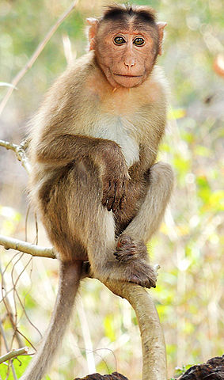

Apes emerged within monkeys as sister of the Cercopithecidae in the Catarrhini, so cladistically they are monkeys as well.  However, there has been resistance to directly designate apes (and thus humans) as monkeys, so "Old World monkey" may be taken to mean either the Cercopithecoidea (not including apes) or the Catarrhini (including apes). That apes are monkeys was already realized by Georges-Louis Leclerc, Comte de Buffon in the 18th century. Linnaeus placed this group in 1758 together with the tarsiers, in a single genus "Simia" (sans Homo), an ensemble now recognised as the Haplorhini. Many monkey species are tree-dwelling (arboreal), although there are species that live primarily on the ground, such as baboons. Most species are mainly active during the day (diurnal). Monkeys are generally considered to be intelligent, especially the Old World monkeys. Within suborder Haplorhini, the simians are a sister group to the tarsiers – the two members diverged some 70 million years ago. New World monkeys and catarrhine monkeys emerged within the simians roughly 35 million years ago. Old World monkeys and apes emerged within the catarrhine monkeys about 25 million years ago. Extinct basal simians such as Aegyptopithecus or Parapithecus (35–32 million years ago) are also considered monkeys by primatologists.